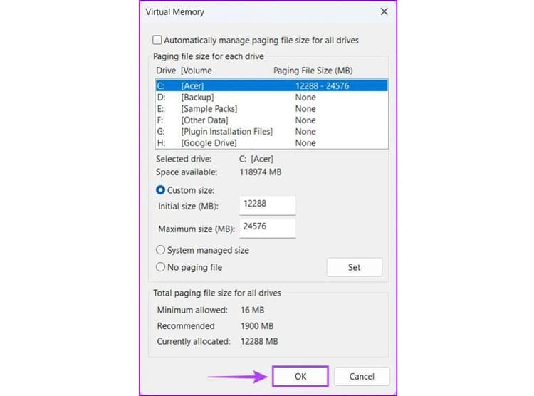

Cách set RAM ảo trên Windows 11
RAM ảo là gì?
Bộ nhớ ảo, hay RAM ảo, là một chức năng quan trọng của hệ điều hành, cho phép sử dụng một phần ổ đĩa cứng như một phần mở rộng của RAM vật lý. Trong trường hợp thiếu hụt RAM, hệ thống máy tính sẽ tự động chuyển sang sử dụng không gian trên ổ cứng để tạo thêm bộ nhớ ảo, giúp việc vận hành các chương trình đòi hỏi nhiều RAM hơn dung lượng có sẵn trở nên khả thi.
Ưu điểm của RAM ảo
Nâng cao khả năng đa nhiệm: Sử dụng RAM ảo giúp máy tính có khả năng hoạt động với nhiều ứng dụng cùng một lúc mà không cần đến dung lượng RAM vật lý lớn, từ đó cải thiện hiệu suất công việc và năng suất người dùng.
Tiết kiệm chi phí: Thay vì đầu tư vào việc mua thêm RAM vật lý, người dùng có thể tận dụng RAM ảo không tốn phí từ hệ điều hành để đáp ứng nhu cầu bộ nhớ.
Gia tăng độ bền của phần cứng: Việc không cần phải thường xuyên nâng cấp RAM vật lý giúp giảm thiểu sự mài mòn và hỏng hóc của phần cứng, qua đó kéo dài tuổi thọ của máy tính.
Dễ dàng quản lý: Việc quản lý RAM ảo thông qua hệ điều hành là một quá trình linh hoạt và dễ dàng, cho phép người dùng điều chỉnh dung lượng theo yêu cầu sử dụng cá nhân.
Cách tính toán dung lượng RAM ảo
Dưới đây là hướng dẫn để tính toán kích thước RAM ảo:
Kích thước ban đầu (Initial Size): Nên đặt kích thước ban đầu bằng với dung lượng RAM vật lý để đảm bảo hệ thống có đủ bộ nhớ cho các tác vụ cơ bản.
Kích thước tối đa (Maximum Size): Microsoft khuyến nghị kích thước tối đa của RAM ảo nên là 1.5 đến 3 lần dung lượng RAM vật lý.
Cách set RAM ảo trên Windows 11
Sau đây là các bước giúp bạn thiết lập RAM ảo trên Windows 11, giúp thiết bị hoạt động trơn tru hơn trong quá trình xử lý các công việc yêu cầu nhiều tác vụ nặng.
Bước 1: Truy cập Settings bằng cách nhấn tổ hợp phím Windows + I.
Bước 2: Chọn System và sau đó là About ở cuối danh sách.
Bước 3: Tìm và chọn ‘Advanced system settings’.

Bước 4: Trong tab Advanced > Nhấn vào ‘Settings’
Bước 5: Chuyển tới tab Advanced trong cửa sổ Performance Options
Bước 6: Tiếp theo, hãy chọn ‘Change’ trong mục Virtual memory (Bộ nhớ ảo).
Bước 7: Trong giao diện Virtual Memory (Bộ nhớ ảo), hãy loại bỏ lựa chọn Automatically manage paging file size for all drives (Tự động quản lý kích thước file paging cho tất cả các ổ).
Bước 8: Lựa chọn ổ đĩa bạn muốn dùng để cài đặt RAM ảo, thường là ổ đĩa chứa hệ điều hành Windows (ví dụ: ổ C:). Nhập vào Custom size (Kích thước tùy chỉnh), bao gồm Initial size (Kích thước ban đầu) và Maximum size (Kích thước tối đa).
Chú ý rằng kích thước ban đầu nên tương đương với dung lượng RAM vật lý và kích thước tối đa nên là 1.5 đến 3 lần lượng RAM vật lý.
Bước 9: Ấn Set rồi OK để hoàn tất cài đặt.
Bước 10: Khi đã hoàn thành những bước trên, hãy nhấn OK để đóng các cửa sổ. Sau đó tiến hành khởi động lại máy tính để cập nhật các thay đổi.
Lời Kết
Cách set RAM ảo là một giải pháp hiệu quả để cải thiện hiệu suất máy tính. Đặc biệt khi bạn không thể nâng cấp RAM vật lý. Hãy áp dụng các bước trên để máy tính của bạn hoạt động mượt mà hơn. Chúc bạn thành công!